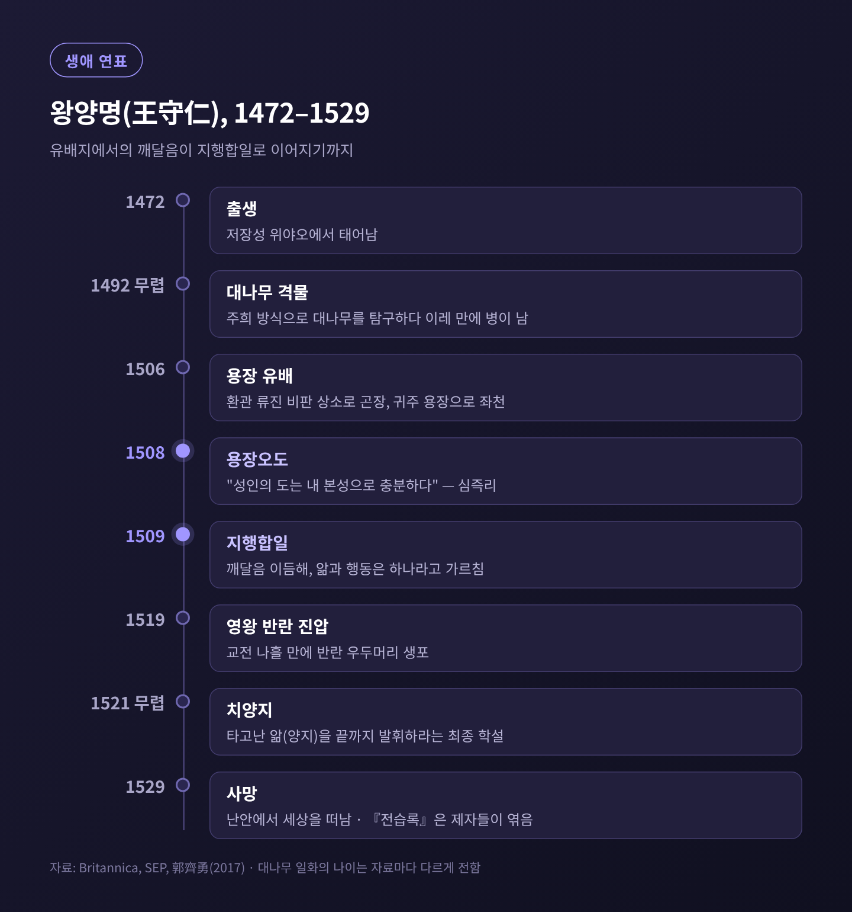
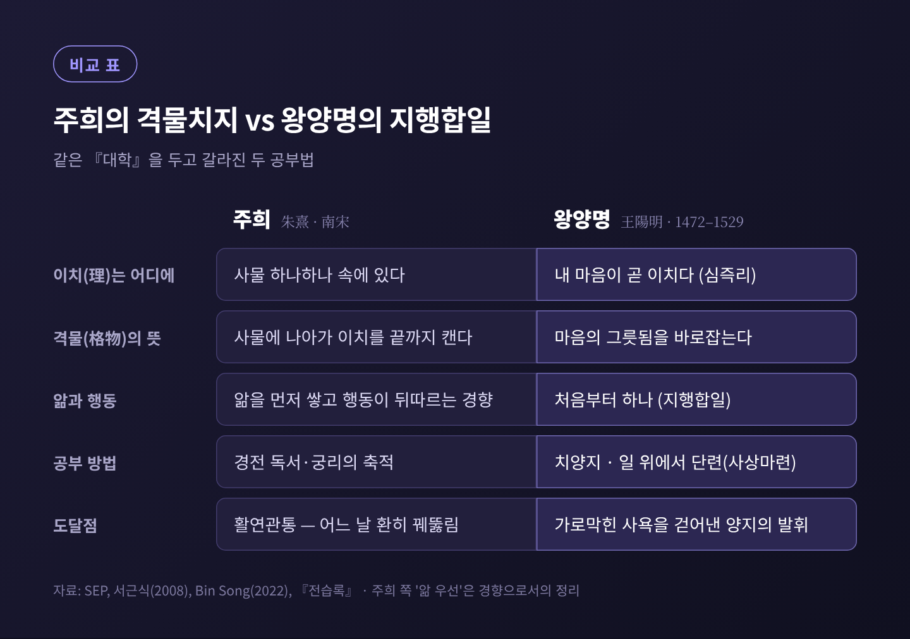
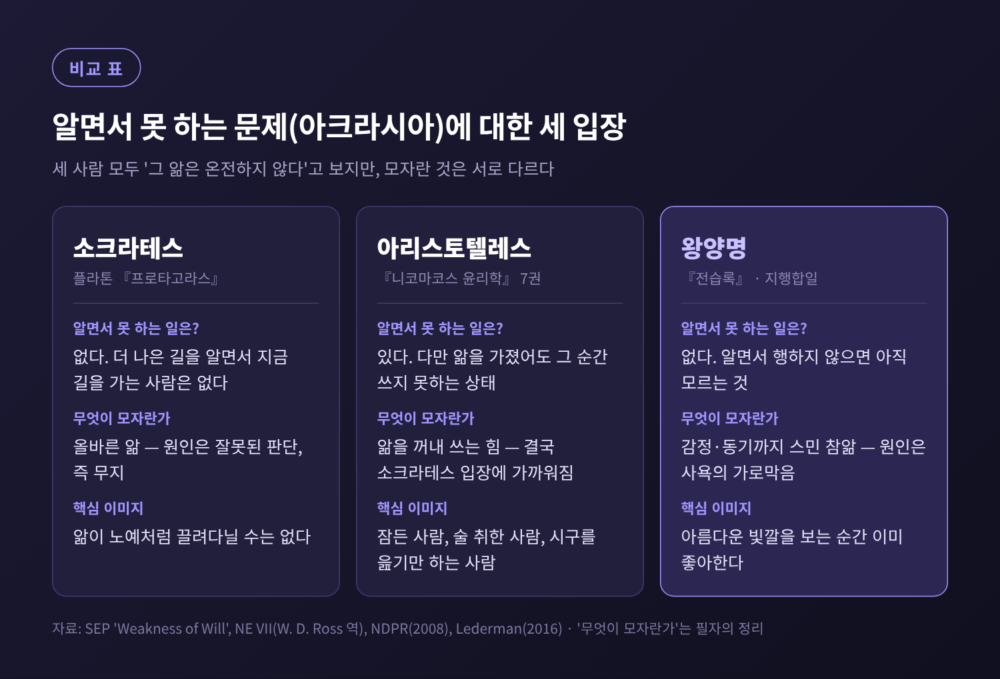
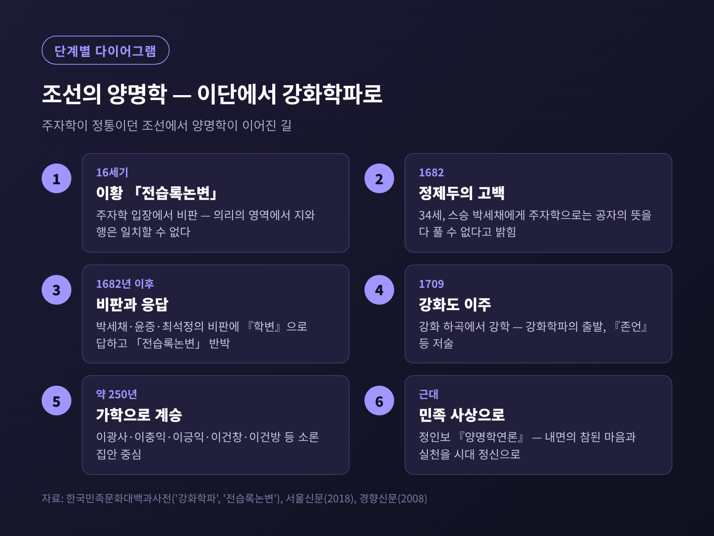

왕양명 지행합일의 의미 — 알면서 못 하는 건 아직 모르는 것일까

이번 글에서는 명나라 사상가 왕양명의 지행합일(知行合一)을 정리해 보겠습니다.
"알면서 행하지 않는다면 아직 모르는 것"이라는 그의 말이 무슨 뜻인지, 어디서 나왔고 어떤 반론을 받았는지를 차례로 살핍니다.
세 줄 요약
- 왕양명은 앎과 행동을 둘로 나누는 주희식 공부법에 반대하며, 참된 앎은 이미 행동을 품고 있다고 보았습니다.
- 알면서도 못 하는 것은 앎이 사욕(私欲)에 가로막힌 상태이고, 처방은 지식을 더하는 것이 아니라 그 가로막음을 걷어내는 수양입니다.
- 이 주장은 서양 철학의 오랜 난제인 아크라시아(의지박약)와 맞닿아 있으며, 조선에서는 정제두와 강화학파가 이어받았습니다.
■ 왕양명은 누구인가
왕양명의 본명은 왕수인(王守仁)입니다.
1472년 저장성 위야오에서 태어나 1529년 장시성 난안에서 세상을 떠났습니다.
양명(陽明)은 그의 호입니다.
그는 서재에만 머문 학자가 아니었습니다.
관료로 일하며 유배를 겪었고, 1519년에는 영왕 주신호의 반란을 진압한 장수이기도 했습니다.
전투에 나선 지 나흘 만에 반란의 우두머리를 사로잡았다고 전합니다.
그래서인지 그의 철학은 처음부터 '실제로 해내는 것'에 무게를 둡니다.
지행합일은 그 무게중심이 가장 선명하게 드러나는 가르침입니다.

■ 출발점: 주희의 격물치지와 대나무 일화
지행합일을 이해하려면 먼저 그가 반대한 것을 봐야 합니다.
바로 남송의 주희(朱熹)가 정리한 격물치지(格物致知)입니다.
『대학』은 공부의 순서를 여덟 단계로 제시합니다.
격물·치지·성의·정심·수신·제가·치국·평천하.
그 첫 두 단계가 격물과 치지입니다.
주희는 『대학』에 격물치지를 풀이한 대목이 빠졌다고 보고, 134자의 보충 문장을 직접 지어 넣었습니다.
그의 해석은 이렇습니다.
앎을 지극히 하려면 사물 하나하나에 나아가 그 이치를 끝까지 캐야 한다.
그렇게 오래 쌓다 보면 어느 날 '활연관통(豁然貫通)', 환하게 꿰뚫리는 순간이 온다.
이 구도에서는 자연히 앎이 먼저 쌓이고 행동이 뒤따르는 경향이 생깁니다.
이치를 충분히 알아야 뜻을 바르게 세울 수 있기 때문입니다.
젊은 왕양명은 이 방법을 정직하게 따라 해 봤습니다.
『전습록』 하권에 그 자신의 회고가 남아 있습니다.
전(錢)씨 성의 친구가 정자 앞 대나무의 이치를 캐려고 골몰하다 사흘 만에 병이 났습니다.
이번엔 왕양명이 직접 해 보았는데, 이레 만에 그도 앓아누웠습니다.
그는 "성현은 될 수 없구나, 격물할 큰 힘이 없다"고 탄식했다고 합니다.
이 일은 보통 1492년, 그가 스무 살 무렵의 일로 봅니다.
다만 나이는 자료마다 12세, 18세, 21세로 다르게 전합니다.
공정하게 덧붙일 점도 있습니다.
스탠퍼드 철학 백과는 이들이 주희의 방법을 제대로 적용했는지 의문을 제기합니다.
주희의 격물은 대나무를 노려보는 일이 아니라 경전과 사람의 일을 폭넓게 탐구하는 공부였기 때문입니다.
대나무 일화는 주희에 대한 반박이라기보다, 왕양명 자신이 품은 의문의 출발점으로 읽는 편이 정확합니다.

■ 용장의 깨달음: 이치는 마음 밖에 있지 않다
전환점은 유배지에서 찾아왔습니다.
1506년, 환관 류진(劉瑾)이 바른말 하는 관리들을 옥에 가두자 왕양명은 그들을 구하려 상소를 올렸습니다.
돌아온 것은 조정에서의 곤장과 귀주 용장(龍場)으로의 좌천이었습니다.
역참을 지키는 말단 자리였고, 처음에는 천연 동굴에서 지냈다고 합니다.
1508년, 그곳에서 그는 한밤중 문득 깨달았습니다.
"성인의 도는 내 본성으로 충분하다. 지금까지 사물에서 이치를 구한 것은 잘못이었다."
이 장면을 흔히 용장오도(龍場悟道)라 부릅니다.
이 깨달음은 『전습록』에서 한 문장으로 압축됩니다.
"마음이 곧 이치다. 천하에 마음 밖의 일, 마음 밖의 이치가 또 있겠는가."
이것이 심즉리(心卽理)입니다.
부모에게 효도해야 한다는 이치는 부모라는 대상 속에 들어 있지 않습니다.
부모를 대하는 내 마음 안에 있습니다.
그렇다면 공부는 바깥 사물을 하나씩 캐는 일이 아니라, 내 마음을 바로잡는 일이 됩니다.
왕양명이 격물의 '격(格)'을 '바로잡다(正)'로 읽은 이유가 여기에 있습니다.
그리고 이듬해인 1509년, 그는 지행합일을 내놓습니다.
■ 『전습록』 서애와의 문답: 아직 모르는 것이다
『전습록』은 제자들이 스승의 말과 편지를 모아 엮은 책입니다.
'전습(傳習)'은 스승에게 전해 받은 것을 부지런히 익힌다는 뜻입니다.
그 첫머리에 지행합일을 둘러싼 유명한 문답이 실려 있습니다.
질문자는 제자 서애(徐愛)입니다.
조선의 서애 유성룡과는 다른 사람입니다.
서애는 동료들과 지행합일을 두고 논쟁하다 결론을 내지 못해 스승에게 물었습니다.
"지금 사람들은 아버지께 효도하고 형을 공경해야 한다는 것을 다 압니다.
그런데도 효도하지 못하고 공경하지 못합니다.
앎과 행동은 분명 두 가지가 아닙니까?"
왕양명의 답은 단호했습니다.
"그것은 이미 사욕에 가로막힌 것이지, 앎과 행동의 본래 모습이 아니다.
알면서 행하지 않는 사람은 없다.
알면서 행하지 않는다면, 그것은 아직 모르는 것이다."
이어서 그는 『대학』의 한 구절을 꺼냅니다.
"아름다운 빛깔을 좋아하듯, 나쁜 냄새를 싫어하듯."
아름다운 빛깔을 보는 것은 앎이고, 그것을 좋아하는 것은 행동입니다.
그런데 우리는 보고 나서 따로 마음먹고 좋아하지 않습니다.
보는 순간 이미 좋아하고 있습니다.
나쁜 냄새도 맡는 순간 이미 싫어합니다.
몸의 예도 듭니다.
아픔을 안다는 것은 이미 스스로 아파 보았다는 뜻입니다.
추위와 배고픔도 마찬가지입니다.
효도를 안다고 말할 수 있는 사람은 이미 효도를 해 본 사람입니다.
그는 이 관계를 이렇게 정식화합니다.
"앎은 행동의 주된 뜻이고, 행동은 앎의 공부다.
앎은 행동의 시작이고, 행동은 앎의 완성이다."
그렇다면 옛사람들은 왜 굳이 앎과 행동을 따로 말했을까요.
왕양명은 이것을 두 부류의 병에 대한 처방으로 봅니다.
생각도 성찰도 없이 멋대로 움직이는 사람에게는 '앎'을 강조했고,
허공에 매달린 듯 생각만 하는 사람에게는 '행동'을 강조했다는 것입니다.
둘로 나눈 것은 말의 편의였을 뿐, 본래 하나라는 뜻입니다.
■ 한 생각이 일어나는 곳이 곧 행동이다
지행합일에는 흔히 놓치는 다른 한쪽 면이 있습니다.
『전습록』 하권에서 왕양명은 이 가르침의 취지를 이렇게 밝힙니다.
"내가 지행합일을 말하는 것은, 한 생각이 일어나는 곳이 곧 행동임을 알게 하려는 것이다."
이 말은 '아는 만큼 실천하라'는 격려에서 그치지 않습니다.
나쁜 생각이 아직 행동으로 옮겨지지 않았다고 해서 내버려 두지 말라는 경고이기도 합니다.
마음이 움직인 순간 이미 행동은 시작되었으니, 뿌리에서부터 이겨내라는 것입니다.
결국 지행합일은 두 방향으로 작동합니다.
선한 앎은 반드시 행동으로 이어져야 하고,
악한 생각은 그 자체로 이미 행동처럼 다스려야 합니다.
■ 치양지와 사상마련: 그래서 어떻게 공부하는가
알면서 못 하는 원인이 사욕이라면, 처방도 달라집니다.
지식을 더 쌓는 것이 아니라 가로막힌 것을 걷어내야 합니다.
왕양명은 이를 두 개념으로 정리했습니다.
치양지(致良知) — 1521년 무렵 정립된, 그의 사상을 마무리하는 가르침입니다.
양지(良知)는 『맹자』에서 온 말로, 배우지 않아도 선악을 아는 타고난 앎입니다.
'치지'를 주희처럼 지식을 넓혀 채우는 일로 보지 않고, 내 안의 양지를 끝까지 발휘하는 일로 읽었습니다.
"한 푼의 사욕을 줄이면 한 푼의 천리를 회복한다"는 그의 말이 이 공부의 결을 잘 보여 줍니다.
사상마련(事上磨鍊) — 일 위에서 갈고닦는다는 뜻입니다.
"사람은 모름지기 일 위에서 갈고닦아야 비로소 설 수 있고, 고요할 때도 움직일 때도 안정될 수 있다."
조용히 앉아 있을 때만 마음이 맑은 것은 아직 공부가 아닙니다.
『전습록』에는 이런 장면도 있습니다.
아이가 위독하다는 소식을 받은 제자에게, 왕양명은 "바로 이런 때 공부해야 한다"고 말합니다.
가족을 돌보지 말라는 뜻이 아닙니다.
마음이 가장 흔들리는 그 순간이 수양이 실제로 시험받는 자리라는 뜻입니다.
■ 알면서도 못 하는 문제, 아크라시아와 겹쳐 보기
"다 알면서 왜 못 할까."
이 물음은 동양만의 고민이 아니었습니다.
서양 철학에서는 이를 아크라시아(akrasia), 흔히 의지박약이라 부릅니다.
자기가 더 낫다고 판단한 것에 반해, 자유롭게 그리고 의도적으로 행동하는 것을 말합니다.
소크라테스는 아예 그런 일이 없다고 했습니다.
플라톤의 『프로타고라스』에서 그는, 더 나은 길을 알면서 지금 길을 계속 가는 사람은 없다고 말합니다.
쾌락에 '져서' 나쁜 일을 한다는 것은 사실 무엇이 최선인지 잘못 판단한 것, 즉 무지라는 것입니다.
아리스토텔레스의 전언에 따르면, 소크라테스는 앎이 사람 안에 있는데 다른 무언가가 그것을 노예처럼 끌고 다닌다는 생각 자체를 이상하게 여겼습니다.
아리스토텔레스는 『니코마코스 윤리학』 7권에서 한발 물러선 설명을 내놓습니다.
자제력 없는 사람은 잠든 사람, 술 취한 사람과 비슷하다는 것입니다.
앎을 가지고는 있지만 그 순간 쓰지 못하는 상태입니다.
감정에 사로잡힌 사람도 학문적 증명이나 엠페도클레스의 시구를 읊을 수는 있습니다.
하지만 읊을 수 있다고 아는 것은 아닙니다.
그리고 그는 이렇게 덧붙입니다. "소크라테스가 세우려 했던 입장이 실제로 따라 나오는 것 같다."

세 사람의 결론은 겉보기에 비슷합니다.
알면서 못 하는 경우, 그 '앎'은 어딘가 온전하지 않다는 것입니다.
하지만 무엇이 모자란지는 다릅니다.
스탠퍼드 철학 백과는 표절하는 학생을 예로 듭니다.
주희와 아리스토텔레스라면 학생이 정말로 표절이 나쁘다는 걸 알면서 저질렀다고 인정할 것입니다.
왕양명은 그 학생이 정말로 알았다는 것 자체를 부정할 것입니다.
미국 철학자 하비 레더먼은 왕양명이 말하는 '행동'에 정감(affect)이 포함된다고 해석합니다.
옳은 것을 안다는 것은 그에 맞는 감정으로 이미 반응하고 있다는 뜻이고,
그래서 적어도 한 종류의 의지박약은 불가능해진다는 것입니다.
아름다운 빛깔을 보는 순간 좋아하게 된다는 비유와 정확히 맞물리는 해석입니다.
물론 반론도 만만치 않습니다.
철학자 에릭 슈비츠게벨은 우리가 분명히 하지 말아야 할 일을 알면서 한다고 지적합니다.
시험에서 부정을 저지르고, 약속을 어깁니다.
브라이언 반 노든은 왕양명의 말이 실천을 독려하려는 일종의 과장이며,
방어할 수 있는 핵심은 "도덕적 진리를 알면 적어도 그에 따라 행동하려는 동기는 생긴다"는 정도라고 봅니다.
제 생각을 조심스럽게 적어 보면 이렇습니다.
소크라테스에게 모자란 것은 올바른 계산이고,
아리스토텔레스에게는 그 순간 앎을 꺼내 쓰는 힘이며,
왕양명에게는 감정과 동기까지 물들인 '몸에 밴 앎'입니다.
그래서 왕양명의 처방은 더 배우라는 것이 아니라, 사욕을 걷어내고 일 속에서 단련하라는 것입니다.
■ 조선의 양명학: 이단에서 강화학파로
양명학은 조선에서 오랫동안 환영받지 못했습니다.
주자학이 정통이었고, 양명학은 소수파의 학문이었습니다.
그 분위기를 만든 대표적인 글이 퇴계 이황의 「전습록논변」입니다.
이황은 『전습록』을 읽고 주자학의 입장에서 조목조목 비판했습니다.
특히 지행합일에 대해서는, 의리(義理)를 다루는 문제에서는 앎과 행동이 일치할 수 없다고 반박했습니다.
이 비판은 훗날 일본 주자학자들의 양명학 비판 문집 첫머리에 실릴 만큼 영향력이 컸습니다.
이 흐름을 정면으로 거스른 사람이 하곡 정제두(1649~1736)입니다.
그는 1682년, 서른넷의 나이에 스승 박세채에게 고백했습니다.
주자의 성리설과 격물치지설로는 공자의 뜻을 온전히 풀 수 없어 양명학을 만나게 되었다고요.
반발은 거셌습니다.
박세채는 『왕양명학변』을, 윤증과 최석정도 비판하는 글을 써서 그를 돌려세우려 했습니다.
정제두는 『학변』으로 답하며 물러서지 않았고, 이황의 「전습록논변」의 논리도 반박했습니다.
치양지와 지행합일을 다룬 『존언』도 그의 저작입니다.
1709년, 그는 강화도 하곡으로 거처를 옮겼습니다.
그곳에서 제자를 기르며 강화학파(江華學派)가 형성되었습니다.
이 학맥은 소론 계열의 집안을 중심으로 약 250년 동안 가학(家學)의 형태로 이어졌습니다.
서예가 이광사, 이충익, 국사학의 이긍익, 이건창과 이건방이 그 계보에 놓입니다.
그리고 이건방의 제자 정인보가 『양명학연론』을 쓰며 근대의 민족 사상으로 연결했습니다.

다만 한쪽 기록도 함께 봐야 합니다.
『영조실록』의 정제두 졸기는 그가 젊어서 양명학을 좋아했으나 나중에 정주학으로 돌아갔다고 적고 있습니다.
반면 현대 연구는 그가 끝까지 양명학을 체계화했다고 봅니다.
당시 양명학이 얼마나 조심스러운 이름이었는지를 보여 주는 대목이기도 합니다.
강화학파가 남긴 것은 철학에만 머물지 않습니다.
고증의 방법을 주체적으로 받아들여 훈민정음, 국어학, 국사학, 서예와 문헌학에서도 성과를 냈습니다.
내면의 참된 마음을 세우고 그것을 일상에서 실천한다는 정신이, 학문의 방향까지 바꾼 셈입니다.
■ 지행합일의 한계와 오늘의 쓸모
예전에는 지행합일을 '아는 만큼 실천하라'는 교훈 정도로 이해했습니다.
지금 다시 읽어 보면, 그것은 앎의 정의를 다시 쓰자는 훨씬 급진적인 주장입니다.
한계도 분명합니다.
앎의 기준을 행동에 두면, 행동하지 않은 모든 경우를 '몰랐다'로 처리하게 됩니다.
이황이 지적했듯, 옳고 그름을 따지는 이치의 영역에서는 아는 것과 하는 것이 쉽게 겹치지 않습니다.
알지만 하지 못하는 우리의 실제 경험을 너무 쉽게 지워 버린다는 비판도 피하기 어렵습니다.
그럼에도 이 주장은 쓸모가 있습니다.
운동이 몸에 좋다는 것을 '안다'고 말하면서 운동하지 않을 때,
왕양명은 우리에게 정보를 더 찾으라고 하지 않습니다.
그 앎이 아직 내 감정과 습관에 스며들지 않았다는 사실을 먼저 보라고 합니다.
그리고 거창한 결심보다, 지금 이 일 위에서 마음을 다잡는 연습을 권합니다.
마지막으로 한 가지만 덧붙이겠습니다.
왕양명이 남긴 질문은 '얼마나 아는가'가 아니라 '어떻게 아는가'였습니다.
"알면서 행하지 않는다면, 그것은 아직 모르는 것이다."
이 말이 지나치게 엄격하게 들리신다면, 저도 같은 생각입니다.
다만 오늘 미뤄 둔 한 가지를 떠올려 보시면, 그 엄격함이 꼭 틀린 말은 아니라는 것도 함께 느끼실 겁니다.
참고 자료
- Stanford Encyclopedia of Philosophy, Wang Yangming
- Stanford Encyclopedia of Philosophy, Weakness of Will
- Encyclopaedia Britannica, Wang Yangming
- Tu Wei-ming, Wang Yangming (Encyclopedia of Religion)
- 王陽明, 『傳習錄』 원문 (Project Gutenberg) — 본문 한국어 옮김은 필자 번역
- Aristotle, Nicomachean Ethics Book VII (W. D. Ross 역)
- Susan Sauvé Meyer, Akrasia in Greek Philosophy 서평 (NDPR)
- Eric Schwitzgebel, Wang Yangming on the Unity of Knowing and Acting
- Harvey Lederman, Weakness of the Will and Liangzhi in Wang Yangming 강연
- 郭齊勇, 王陽明的坎坷人生與思想智慧 (愛思想)
- 胡一帆, 重拾三心，復興心學 (愛思想)
- China Daily, 王阳明在修文：知行合一 成圣之道
- 서근식, 『대학』 해석을 통해 본 주자의 격물치지론
- 한국민족문화대백과사전, 강화학파
- 한국민족문화대백과사전, 전습록논변
- 서울신문, 조선 양명학 체계를 세우다 (2018)
- 서울신문, 고전 톡톡 다시읽기 — 왕양명 『전습록』 (2010)
- 경향신문, 역사의 땅, 사상의 고향 — 강화학파 (2008)
#왕양명 #지행합일 #전습록 #양명학 #심즉리 #치양지 #아크라시아 #정제두 #강화학파 #동양철학